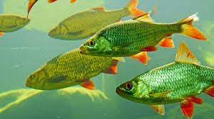

Cats are very friendly animals as they can be kept as domestic pets.

Birds are one unique part of the nature bio-diversity.

Dogs are known to be a human's best friend.

Fishes are aquatic creatures that are non-harmful and swim peacefully.

Foxes are wild predators,which are known to be smart and cunning.

Owls are night creatures that stay active only in the dark.